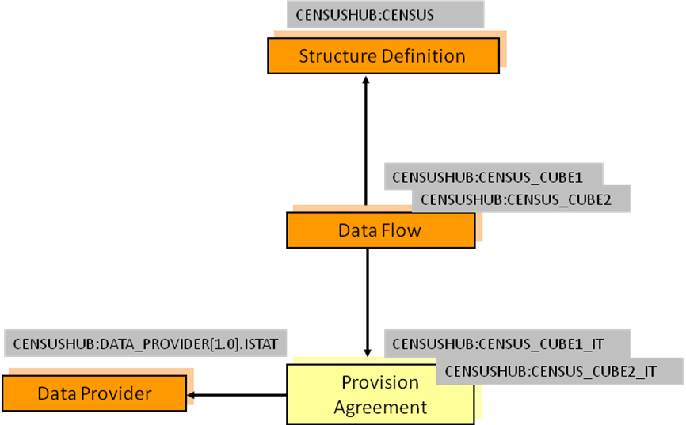
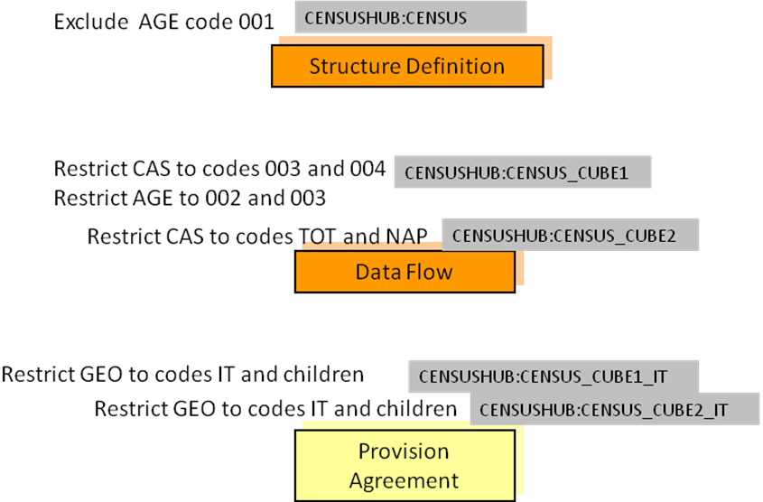

Constraints¶
Introduction¶
A Constraint is a Maintainable Artefact that can be associated to one or more of:
- Data Structure Definition
- Metadata Structure Definition
- Dataflow
- Metadataflow
- Provision Agreement
- Metadata Provision Agreement
- Data Provider or Metadata Provider (this is restricted to a Release Calendar Constraint)
- Simple or Queryable Data Sources
- Dataset
- Metadataset
Note that regardless of the Artefact to which the Constraint is associated, it is constraining the contents of code lists in the DSD to which the constrained object is related. This does not apply, of course, to a Metadata/Data Provider as the latter can be associated, via the (Metadata) Provision Agreement, to many MSDs/DSDs. Hence the reason for the restriction on the type of Constraint that can be attached to a Metadata/Data Provider.
Types of Constraint¶
The Constraint can be of one of two types:
- Data constraint
- Metadata constraint
The Data Constraint may serve two different perspectives, depending on the way the latter is retrieved. These are:
- Allowed constraint
- Actual constraint
The former (allowed – also valid for Metadata Constraint) is specified by a data or metadata provider or consumer for sharing the allowed data and metadata in the context of their DSD or MSD exchanges, e.g., only Monthly data for a specific Dataflow. The latter (actual) is a dynamic Constraint in response to an availability request (only possible for data).
For Actual Data Constraints, there a few characteristics that are worth noting:
- They can only be retrieved by the availability requests (as specified in the REST API).
- They depend on the data available in an SDMX Web Service and thus they can only be dynamically generated according to that data.
- Although they are Maintainable Artefacts, they cannot change independently of data; thus, they cannot be versioned (they are non-versioned, as explained in section 14).
- Their identifier may also be dynamically generated and thus there is no REST resource based on their identification.
Rules for a Constraint¶
Scope of a Constraint¶
A Constraint is used specify the content of a data or metadata source in terms of the component values or the keys.
In terms of data the components are:
- Dimension
- Time Dimension
- Data Attribute
- Measure
- Metadata Attribute
- DataKeySets: the keys are the content of the KeyDescriptor – i.e., the series keys composed, for each key, by a value for each Dimension.
In terms of reference metadata the components are:
- Metadata Attribute
For a Constraint based on a DSD the Constraint can reference one or more of:
- Data Structure Definition
- Dataflow
- Provision Agreement
- Data Provider
For a Constraint based on an MSD the Constraint can reference one or more of:
- Metadata Structure Definition
- Metadataflow
- Metadata Provision Agreement
- Metadata Provider
- Metadata Set
Furthermore, there can be more than one Constraint specified for a specific object e.g., more than one Constraint for a specific DSD.
In view of the flexibility of constraints attachment, clear rules on their usage are required. These are elaborated below.
Multiple Constraints¶
There can be many Constraints for any Constrainable Artefact (e.g., DSD), subject to the following restrictions:
Cube Region¶
A Constraint can contain multiple Member Selections (e.g., Dimensions).
- A specific Member Selection (e.g., Dimension
FREQ) can only be contained in one Cube Region for any one attached object (e.g., a specific DSD or specific Dataflow). - Component values within a Member Selection may define a validity period. Otherwise, the value is valid for the whole validity of the Cube Region.
- For partial reference resolution purposes (as per the SDMX REST API), the latest non-draft Constraint must be considered.
- A Member Selection may include wildcarding of values (using
character
‘%’to represent zero or more occurrences of any character), as well as cascading through hierarchic structures (e.g., parents in Codelist), or localised values (e.g., text for English only). Lack of locale means any language may match. Cascading values are mutual exclusive to localised values, as the former refer to coded values, while the latter refer to uncoded values. - Any values included in a Member Selection for Components with an
array data type (i.e., Measures, Attributes or Metadata Attributes),
will be applied as single values and will not be assessed combined
with other values to match all possible array values. For example,
including the Code
‘A’for an Attribute will allow any instance of the Attribute that includes‘A’, like[‘A’, ‘B’]or[‘A’, ‘C’, ‘D’]. Similarly, if Code‘A’was excluded, all those arrays of values would also be excluded.
Key Set¶
Key Sets will be processed in the order they appear in the Constraint and wildcards can be used (e.g., any key position not reference explicitly is deemed to be “all values”).
As the Key Sets can be “included” or “excluded” it is recommended that Key Sets with wildcards are declared before KeySets with specific series keys. This will minimize the risk that keys are inadvertently included or excluded.
In addition, Attribute, Measure and Metadata Attribute constraints may accompany KeySets, in order to specify the allowed values per Key. Those are expressed following the rules for Cube Regions, as explained above.
Finally, a validity period may be specified per Key.
Inheritance of a Constraint¶
Attachment levels of a Constraint¶
There are three levels of constraint attachment for which these inheritance rules apply:
- DSD/MSD – top level
- Dataflow/Metadataflow – second level
- Provision Agreement – third level
- Dataflow/Metadataflow – second level
Note that these rules do not apply to the Simple Datasource or Queryable Datasource; the Constraint(s) attached to these artefacts are resolved for this artefact only and do not take into account Constraints attached to other artefacts (e.g., Provision Agreement, Dataflow, DSD).
It is not necessary for a Constraint to be attached to a higher level artefact. e.g., it is valid to have a Constraint for a Provision Agreement where there are no constraints attached the relevant dataflow or DSD.
Cascade rules for processing Constraints¶
The processing of the constraints on either Dataflow/Metadataflow or Provision Agreement must take into account the constraints declared at higher levels. The rules for the lower-level constraints (attached to Dataflow/ Metadataflow and Provision Agreement) are detailed below.
Note that there can be a situation where a constraint is specified at a lower level before a constraint is specified at a higher level. Therefore, it is possible that a higher-level constraint makes a lower-level constraint invalid. SDMX makes no rules on how such a conflict should be handled when processing the constraint for attachment. However, the cascade rules on evaluating constraints for usage are clear – the higher-level constraint takes precedence in any conflicts that result in a less restrictive specification at the lower level.
Cube Region¶
It is not necessary to have a Constraint on the higher-level artefact (e.g., DSD referenced by the Dataflow), but if there is such a Constraint at the higher level(s) then:
- The lower-level Constraint cannot be less restrictive than the
Constraint specified for the same Member Selection (e.g. Dimension)
at the next higher level, which constrains that Member Selection.
For example, if the Dimension
FREQis constrained toA, Qin a DSD, then the Constraint at the Dataflow or Provision Agreement cannot beA, Q, Mor even justM– it can only further constrainA, Q. - The Constraint at the lower level for any one Member Selection further constrains the content for the same Member Selection at the higher level(s).
- Any Member Selection, which is not referenced in a Constraint, is deemed to be constrained according to the Constraint specified at the next higher level which constraints that Member Selection.
- If there is a conflict when resolving the Constraint in terms of a lower-level Constraint being less restrictive than a higher-level Constraint, then the Constraint at the higher-level is used.
Note that it is possible for a Constraint at a higher level to constrain, say, four Dimensions in a single Constraint, and a Constraint at a lower level to constrain the same four in two, three, or four Constraints.
Key Set¶
It is not necessary to have a Constraint on the higher-level artefact (e.g., DSD referenced by the Dataflow), but if there is such a Constraint at the higher level(s) then:
- The lower-level Constraint cannot be less restrictive than the Constraint specified at the higher level.
- The Constraint at the lower level for any one Member Selection further constrains the keys specified at the higher level(s).
- Any Member Selection, which is not referenced in a Constraint, is deemed to be constrained according to the Constraint specified at the next higher level which constraints that Member Selection.
- If there is a conflict when resolving the keys in the Constraint at two levels, in terms of a lower-level constraint being less restrictive than a higher-level Constraint, then the offending keys specified at the lower level are not deemed part of the Constraint.
Note that a Key in a Key Set can have wildcarded Components. For
instance, the Constraint may simply constrain the Dimension FREQ to "A",
and all keys where the FREQ="A" are therefore valid.
The following logic explains how the inheritance mechanism works. Note that this is conceptual logic and actual systems may differ in the way this is implemented.
- Determine all possible keys that are valid at the higher level.
- These keys are deemed to be inherited by the lower-level constrained object, subject to the Constraints specified at the lower level.
- Determine all possible keys that are possible using the Constraints specified at the lower level.
- At the lower level inherit all keys that match with the higher-level Constraint.
- If there are keys in the lower-level Constraint that are not inherited then the key is invalid (i.e., it is less restrictive).
Constraints Examples¶
Data Constraint and Cascading¶
The following scenario is used.
A DSD contains the following Dimensions:
GEO– GeographySEX– SexAGE– AgeCAS– Current Activity Status
In the DSD, common code lists are used and the requirement is to restrict these at various levels to specify the actual code that are valid for the object to which the Constraint is attached.

Figure 20. Example Scenario for Constraints
Constraints are declared as follows:

Figure 21. Example Constraints
Notes:
AGE is constrained for the DSD and is further restricted for the
Dataflow CENSUS_CUBE1.
- The same Constraint applies to both Provision Agreements.
The cascade rules elaborated above result as follows:
DSD
- Constrained by eliminating code
001from the code list for theAGEDimension.
Dataflow CENSUS_CUBE1
-
Constrained by restricting the code list for the
AGEDimension to codes002and003(note that this is a more restrictive constraint than that declared for the DSD which specifies all codes except code 001).- Restricts the
CAScodes to003and004.
- Restricts the
Dataflow CENSUS_CUBE2
- Restricts the code list for the
CASDimension to codesTOTandNAP.- Inherits the
AGEconstraint applied at the level of the DSD.
- Inherits the
Provision Agreement CENSUS_CUBE1_IT
- Restricts the codes for the
GEODimension toITand its children.- Inherits the constraints from Dataflow
CENSUS_CUBE1for theAGEandCASDimensions.
- Inherits the constraints from Dataflow
Provision Agreement CENSUS_CUBE2_IT
- Restricts the codes for the
GEODimension toITand its children.- Inherits the constraints from Dataflow
CENSUS_CUBE2for theCASDimension. - Inherits the
AGEconstraint applied at the level of the DSD.
- Inherits the constraints from Dataflow
The Constraints are defined as follows:
DSD Constraint:
<str:DataConstraint agencyID="SDMX" id="DATA_CONSTRAINT" version="1.0.0-draft" type="Allowed">
<com:Name xml:lang="en">SDMX 3.0 Data Constraint sample</com:Name>
<str:ConstraintAttachment>
<str:DataStructure>urn:sdmx:org.sdmx.infomodel.datastructure.DataStructure=CENSUSHUB:CENSUS(1.0.0)</str:DataStructure>
</str:ConstraintAttachment>
<str:CubeRegion include="true">
<!-- the ability to exclude values is illustrated – i.e., all values valid except this one -->
<com:KeyValue id="AGE" include="false">
<com:Value>001</com:Value>
</com:KeyValue>
</str:CubeRegion>
</str:DataConstraint>
Dataflow Constraints:
<str:DataConstraint agencyID="SDMX" id="DATA_CONSTRAINT_2" version="1.0.0-draft" type="Allowed">
<com:Name xml:lang="en">SDMX 3.0 Data Constraint sample</com:Name>
<str:ConstraintAttachment>
<str:Dataflow>urn:sdmx:org.sdmx.infomodel.datastructure.Dataflow=
CENSUSHUB:CENSUS_CUBE1(1.0.0)</str:Dataflow>
</str:ConstraintAttachment>
<str:CubeRegion include="true">
<com:KeyValue id="AGE" include="true">
<com:Value>002</com:Value>
<com:Value>003</com:Value>
</com:KeyValue>
<com:KeyValue id="CAS">
<com:Value>003</com:Value>
<com:Value>004</com:Value>
</com:KeyValue>
</str:CubeRegion>
</str:DataConstraint>
<str:DataConstraint agencyID="SDMX" id="DATA_CONSTRAINT_3" version="1.0.0-draft" type="Allowed">
<com:Name xml:lang="en">SDMX 3.0 Data Constraint sample</com:Name>
<str:ConstraintAttachment>
<str:Dataflow>urn:sdmx:org.sdmx.infomodel.datastructure.Dataflow=
CENSUSHUB:CENSUS_CUBE2(1.0.0)</str:Dataflow>
</str:ConstraintAttachment>
<str:CubeRegion include="true">
<com:KeyValue id="CAS" include="true">
<com:Value>TOT</com:Value>
<com:Value>NAP</com:Value>
</com:KeyValue>
</str:CubeRegion>
</str:DataConstraint>
Provision Agreement Constraint:
<str:DataConstraint agencyID="SDMX" id="DATA_CONSTRAINT_4" version="1.0.0-draft" type="Allowed">
<com:Name xml:lang="en">SDMX 3.0 Data Constraint sample</com:Name>
<str:ConstraintAttachment>
<str:ProvisionAgreement>urn:sdmx:org.sdmx.infomodel.registry.
ProvisionAgreement=CENSUSHUB:CENSUS_CUBE1_IT(1.0.0)
</str:ProvisionAgreement>
<str:ProvisionAgreement>urn:sdmx:org.sdmx.infomodel.registry.
ProvisionAgreement=CENSUSHUB:CENSUS_CUBE2_IT(1.0.0)
</str:ProvisionAgreement>
</str:ConstraintAttachment>
<str:CubeRegion include="true">
<com:KeyValue id="GEO" include="true">
<com:Value cascadeValues="true">IT</com:Value>
</com:KeyValue>
</str:CubeRegion>
</str:DataConstraint
Combination of Constraints¶
The possible combination of constraining terms are explained in this section, following a few examples.
Let’s assume a DSD with the following Components:
| Type | Component |
|---|---|
| Dimension | FREQ |
| Dimension | JD_TYPE |
| Dimension | JD_CATEGORY |
| Dimension | VIS_CTY |
| TimeDimension | TIME_PERIOD |
| Attribute | OBS_STATUS |
| Attribute | UNIT |
| Attribute | COMMENT |
| MetadataAttribute | CONTACT |
| Measure | MULTISELECT |
| Measure | CHOICE |
On the above, let’s assume the following use cases with their constraining requirements:
Use Case 1: A Constraint on allowed values for some Dimensions¶
R1: Allow monthly and quarterly dataR2: Allow Mexico for vis-à-vis country
This is expressed with the following CubeRegion:
| Dimension | Values |
|---|---|
FREQ |
M, Q |
VIS_CTY |
MX |
Use Case 2: A Constraint on allowed combinations for some Dimensions¶
R1: Allow monthly data for GermanyR2: Allow quarterly data for Mexico
This is expressed with the following DataKeySet:
| Key | Dimension | Values |
|---|---|---|
Key1 |
FREQ |
M |
Key1 |
VIS_CTY |
DE |
Key2 |
FREQ |
Q |
Key2 |
VIS_CTY |
MX |
Use Case 3: A Constraint on allowed values for some Dimensions combined with allowed values for some Attributes¶
R1: Allow monthly and quarterly dataR2: Allow Mexico for vis-à-vis countryR3: Allow present for status
This may be expressed with the following CubeRegion:
| Dimensions | Values |
|---|---|
FREQ |
M, Q |
VIS_CTY |
MX |
OBS_STATUS |
A |
Use Case 4: A Constraint on allowed combinations for some Dimensions combined with specific Attribute values¶
R1: Allow monthly data, for Germany, with unit euroR2: Allow quarterly data, for Mexico, with unit usd
This is may be expressed with the following DataKeySet:
| Key | Dimension | Values |
|---|---|---|
Key1 |
FREQ |
M |
Key1 |
VIS_CTY |
DE |
Key1 |
UNIT |
EUR |
Key2 |
FREQ |
Q |
Key2 |
VIS_CTY |
MX |
Key2 |
UNIT |
USD |
Use Case 5: A Constraint on allowed values for some Dimensions together with some combination of Dimension values¶
R1: For annually and quarterly data, for Mexico and Germany, onlyAstatus is allowedR2: For monthly data, for Mexico and Germany, onlyFstatus is allowed
Considering the above examples, the following CubeRegions would be
created:
| CubeRegion | Dimension | Values |
|---|---|---|
CubeRegion1 |
FREQ |
Q, A |
CubeRegion1 |
VIS_CTY |
MX, DE |
CubeRegion1 |
OBS_STATUS |
A |
CubeRegion2 |
FREQ |
M |
CubeRegion2 |
VIS_CTY |
MX, DE |
CubeRegion2 |
OBS_STATUS |
F |
The problem with this approach is that according to the business rule
for Constraints, only one should be specified per Component. Thus, if a
software would perform some conflict resolution would end up with empty
sets for FREQ and OBS_STATUS (as they do not share any values).
Nevertheless, there is a much easier approach to that; this is the cascading mechanism of Constraints (as shown in Data Constraint and Cascading). Hence, these rules would be expressed into two levels of Constraints, e.g., DSD and Dataflows:
DSD CubeRegion:
| Dimension | Value |
|---|---|
FREQ |
M, Q, A |
VIS_CTY |
MX, DE |
OBS_STATUS |
A, F |
Dataflow1 CubeRegion:
| Dimension | Value |
|---|---|
FREQ |
Q, A |
VIS_CTY |
MX, DE |
OBS_STATUS |
F |
Dataflow2 CubeRegion:
| Dimension | Value |
|---|---|
FREQ |
M |
VIS_CTY |
MX, DE |
OBS_STATUS |
A |
Use case 6: A Constraint on allowed values for some Dimensions combined with allowed values for Measures¶
R1: Allow monthly data, for Germany, with unit euro, and measure choice is ‘A’R2: Allow quarterly data, for Mexico, with unit usd, and measure choice is ‘B’
This is may be expressed with the following DataKeySet:
| Key | Dimension | Value |
|---|---|---|
Key1 |
FREQ |
M |
Key1 |
VIS_CTY |
DE |
Key1 |
UNIT |
EUR |
Key1 |
CHOICE |
A |
Key2 |
FREQ |
Q |
Key2 |
VIS_CTY |
MX |
Key2 |
UNIT |
USD |
Key2 |
CHOICE |
B |
Use Case 7: A Constraint with wildcards for Codes and removePrefix property¶
For this example, we assume that the VIS_CTY representation has been
prefixed with prefix ‘AREA_’. In this Constraint, we need to remove the
prefix.
R1: Allow monthly and quarterly dataR2: Allow vis-à-vis countries that start withMR3: Remove the prefix‘AREA_’
This may be expressed with the following CubeRegion:
| Dimension | Value |
|---|---|
FREQ |
M, Q |
VIS_CTY (removePrefix=’AREA_’) |
M% |
Use Case 8: A Constraint with multilingual support on Attributes¶
- R1: Allow monthly and quarterly data
- R2: Allow Mexico for vis-à-vis country
- R3: Allow a comment, in English, which includes the term adjusted for status
This may be expressed with the following CubeRegion:
| Dimension | Value |
|---|---|
FREQ |
M, Q |
VIS_CTY |
MX |
COMMENT (lang=’en’) |
%adjusted% |
Use Case 9: A Constraint on allowed values for Dimensions combined with allowed values for Metadata Attributes¶
R1: Allow monthly and quarterly dataR2: Allow Mexico for vis-à-vis countryR3: Allow John Doe for contact
This may be expressed with the following CubeRegion:
| Dimension | Value |
|---|---|
FREQ |
M, Q |
VIS_CTY |
MX |
CONTACT |
John Doe |
Other constraining terms¶
Beyond the cube regions and keysets, there is one more constraining
term, i.e., the ReleaseCalendar.
The ReleaseCalendar is the only term that does not apply on Components;
it specifies the schedule of publication or reporting of the dataset or
metadataset.
For example, the ReleaseCalendar for Provider BIS, is specified in the
three following terms:
- Periodicity: how often data should be reported, e.g., monthly
- Offset: the number of days between the 1st of January and the first release of data, e.g., 10 days
- Tolerance: the maximum allowed of days that data may be considered, without being considered as late, e.g., 5 days
With the above terms, BIS would need to report data between the
10th and 15th of every month.
Note
The SDMX 2.1 constraining term ReferencePeriod has been deprecated
in SDMX 3.0; thus, the TimeDimension and any Dimension with a time
Representation can be constrained within a CubeRegion or
MetadataTargetRegion, using the TimeRangeValue.